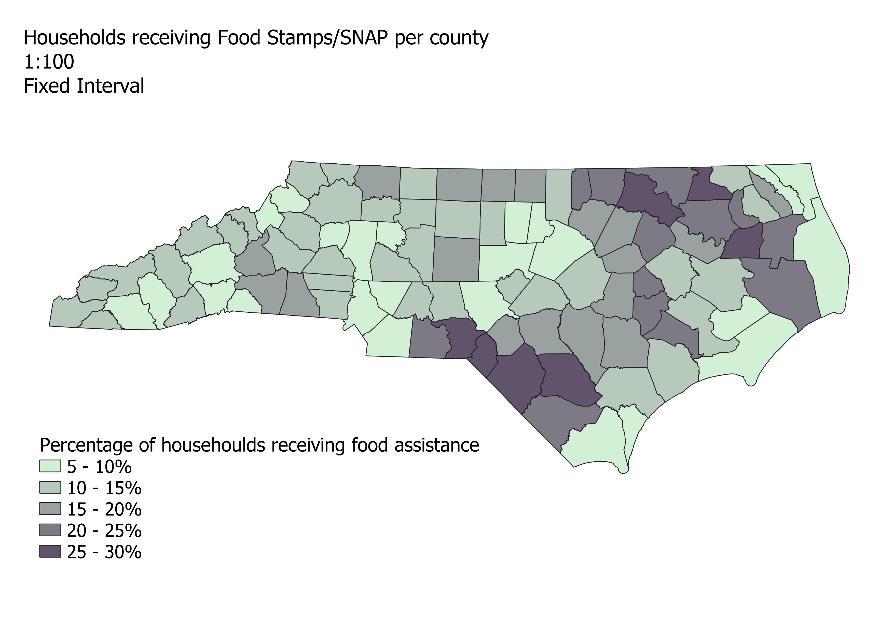

Pros: Numbers are easy to read and understand; communicates data in a way that makes sense to the viewer.
Cons: It can be difficult to distinguish the scale of each class.
Pros: Classes are grouped so that counties with similar data aren't split; groupings make sense visually.
Cons: Can't be used to compare multiple datasets; despite looking good it can be hard to understand the groupings without seeing the raw data.
Pros: You can distinguish the highest and lowest ranges visually; groups are evenly represented.
Cons: Counties with similar percentages may be broken up into different classes, and ones with vastly different percentages may be grouped together, making the chloropleth potentially misleading.